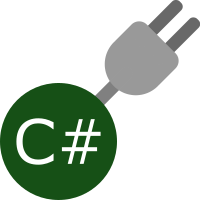

Simple, fast, functional programming. Crisp (for reduced lisp in C#) reduces programming to its purest form, then builds it right back out again. A clean and minimalist Lisp dialect based loosely on Lispkit Lisp with a small but beautiful standard library, Crisp takes programming back to its roots.
Use the cleanest, most minimal lispy syntax to create your programs. Build fast, predicatable and efficient programs using only a few primitive data types (booleans, strings and numerics), functions and lists.

Missing some key functionality? Use C# to write a new special form, compile it into a library and access it straight from your Crisp code.
Run Crisp on Packet - a webserver optimised for serving dynamic webpages generated in Crisp. Add data persistence with the included Crisp.Data assembly which handily wraps a 100% managed port of SQLite.